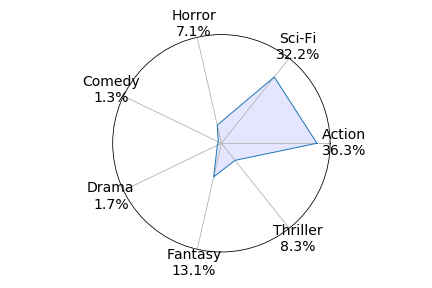

A few months ago, two of my friends got into an argument over whether Avengers: Infinity War was a fantasy or a science-fiction film. Deciding to use a credible source to settle their debate, we turned to IMDb, which conveniently cross-lists the movie under both genres. Thus, the debate evolved (devolved?) into whether the film is more fantasy or more sci-fi.
IMDb will tell you what genre any movie falls under, but not to what extent. That is, we can agree Inception and Star Trek are both sci-fi films, but who’s to say which is more sci-fi? And no, not which film is more futuristic or extraterrestrial - rather, which film better represents science-fiction as a genre, more strongly captures the elements commonly seen throughout the genre. If you were to define “sci-fi” to a young child, which film would you use as an example?
Up until now, there’s been no quantifying movie genre classifications. A movie is either a fantasy, or it isn’t. A movie is either a sci-fi, or it isn’t. To get my friends to shut up about Avengers, I had to change that.
So not only is Avengers: Infinity War more sci-fi than fantasy, it’s also more action and adventure than fantasy. The applications of genre measuring go beyond settling debates, however. Instead of comparing different genre percentages within a single film, we can compare absolute values across all films we’ve collected data on. This reveals which movies are the most defining of any genre of interest. As stated above, “most horror” should not be thought of as scariest, and “most comedy” not as funniest - just the most genre defining.